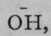
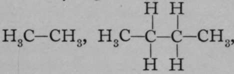

Nomenclature Of Compounds
Description
This section is from the book "Modern Chemistry", by William Ramsay. Also available from Amazon: Modern Chemistry: Theoretical and Modern Chemistry (Volume 2).
Nomenclature Of Compounds
The nomenclature of this class of bodies is due to a committee of which Lavoisier was a member. After his discovery of the true nature of oxygen, he was led, not unnaturally, to ascribe to it the chief function in the formation of compounds, and the acids and salts were named without introducing any syllable to signify that oxygen was one of the constituents. In general, the best known or the first discovered acid was given a name terminating in " ic," such as " chloric," " sulphuric," "nitric." The salts of these acids were termed "chlorates," "sulphates," and "nitrates." The acid containing one atom of oxygen less was named with the final syllable " ous," thus: "chlorous acid," " sulphurous acid," "nitrous acid;" and the salts were termed " chlorites," "sulphites," and "nitrites." Acids containing still less oxygen were named with the prefix "hypo," thus: " hypochlorous acid " and " hypochlorites ; " and acids and salts containing more oxygen than those which had names terminating in " ic " and "ate" were distinguished by the prefix "per," thus: "perchloric," " persulphuric " acids, forming " perchlorates " and " persulphates." This nomenclature is still retained. It is illustrated in the table which follows :—
Hypochlorous acid, . | HOCl. |
Chlorous acid, . | HOCIO. |
Chloric acid, | HOClO2. |
Perchloric acid, .... | HOCIO.:. KOCl. |
Potassium hypochlorite, | |
„ chlorite, | KOCIO. |
,, chlorate, . | KOCIO,. |
perchlorate, | kocio:. |
The second class of hydroxides is named " hydroxides." Members of this class, however, yield ions, one of which is always hydroxyl, OH. As examples, we may select sodium hydroxide, Na—O—H, and calcium hydroxide, Here solutions of these compounds in water contain the ions and and and Such hydroxides are termed bases ; but the name is aiso indiscriminately applied to oxides when they unite with water to form bases. Thus CuO and Cu(OH)2 are each termed bases.
The same elements may sometimes form bases and acids, according to the valency. The element chromium is an instance. Chromous oxide has the formula Cr=0, corresponding to the chloride Cr=Cl.,; the hydroxide is analogous with the chloride, and has the formula Cr=(OH)2. But there is also an oxide, CrO3, where chromium is a hexad ; the hydroxide is not known, but the acid is like sulphuric acid in formula, viz. This is an instance of the rule, of very wide application, that the character of a compound is influenced both by the nature of the elements contained in it, as well as by its structure and the valency of these elements.
Sulphur, and in a less degree selenium and tellurium, resemble oxygen in forming salts of nature similar to these described, as well as acids and bodies analogous to hydroxides. The nomenclature follows that of the oxides, except that the syllables "sulpho" or "thio" are interposed for the sulphur compounds. Thus we have a carbonate, K.,CO3, and a sulpho- or thiocarbonate, K2CS3. In the somewhat rare cases where selenium or tellurium play a similar part, the words "selenio-" or " tellurio-" are interposed. Compounds analogous to the hydroxides are termed " hydrosulphides," " hydroselenides," or " hydro-tellurides.,,
4. Compounds of nitrogen, phosphorus, arsenic, and antimony, with other elements, are termed nitrides, phosphides, arsenides, and antimonides. And just as double oxides of hydrogen and other elements exist, so too nitrides of hydrogen and other elements are known. The compound of nitrogen and hydrogen, ammonia, which has the formula NH3, unites with acids, forming salts. For example, ammonium chloride, NH4Cl, is produced by the direct union of ammonia, NH3, with hydrogen chloride, HCl, if a trace of moisture is present. In aqueous solution it undergoes partial ionisation, and the ions are and .
In this it resembles sodium chloride, NaCl, and. the name "ammonium'* has been devised to exhibit this similarity. When ammonium chloride or similar compounds are formed by the union of ammonia with acids, it is believed that the nitrogen atom changes its valencv from triad to pentad, thus : H—N=H2 and .
Even in "substituted ammonias," this property of combining with acids is distinctive. For example, copper chloride, CuCl9, unites directly with ammonia, giving Cu=(NH2)22HCl or Cu=(NH3)2Cl2. It will be seen that the atom of dyad copper has replaced two atoms of monad hydrogen in two molecules of ammonium chloride.
It is possible, too, for a group of elements to replace the hydrogen of ammonia, just as it is possible for a group to take the place of the hydrogen of water. Referring back to the formula of sulphuric acid, H.?SO4, it is plain that it may be written SO2=(OH)0, and regarded as two molecules of water, in which two atoms of hydrogen have been replaced by the dyad group, SO2. This is identical with the structural formula already given on p. 54. So, too, with nitrogen; the compound SO2=(NH2)2 is also known, and it may be regarded as derived from two molecules of ammonia by the replacement of two atoms of hydrogen by the dyad group, SO0".
Compounds of phosphorus, arsenic, and antimony after this pattern are not known.
5. Compounds of carbon and silicon with other elements are termed carbides and si/icides. The carbides are extraordinarily numerous owing to the power possessed by carbon of forming compounds in which two or more atoms of carbon are in combination with each other. We have seen that a molecule of hydrogen consists of two atoms ; a molecule of oxygen also consists of two atoms ; but we know of no compounds of oxygen in which more than three atoms of oxygen are in combination with each other. With carbon, however, the case is different. Considering the combination with hydrogen alone, we have not only CH4, but  in all of which the element carbon is a tetrad, being either in combination with hydrogen or with another atom of carbon. And these compounds may have their hydrogen replaced by other elements; for example, an atom of chlorine may take the place of an atom of hydrogen in any one of these compounds, or one or more atoms of hydrogen may be replaced by groups of hydroxyl, —OH, or two atoms of monad hydrogen may be replaced by an atom of dyad oxygen, or three atoms by one of triad nitrogen, and so on. This makes the chemistry of the carbon compounds very complicated, but at the same time it affords the means whereby the numerous constituent compounds of the tissue of plants and animals can be built up, for they consist, for the most part, of carbon compounds, containing at the same time other elements in combination with the carbon atoms. This branch of chemistry is commonly termed M Organic Chemistry," and treated separately.
6. Many elements of the metallic class, such as iron, lead, copper, sodium, etc, form compounds with each other. These compounds are usually named "alloys;" but it must be mentioned that the name " alloy " is often applied to solid mixtures of the metals where no actual compound exists.
Such are the classes into which chemical compounds may be divided. In a short sketch like the present, it is, of course, impossible to do more than consider a few of these compounds, and those will be chosen which are best adapted to illustrate the nature of the various groups, They will be considered in the second volume.
Continue to:
- prev: Classification Of Compounds
- Table of Contents
- next: Chapter V. Methods Of Determining The Equivalents Of The Elements Of Ascertaining their Molecular Weights—Allotropy